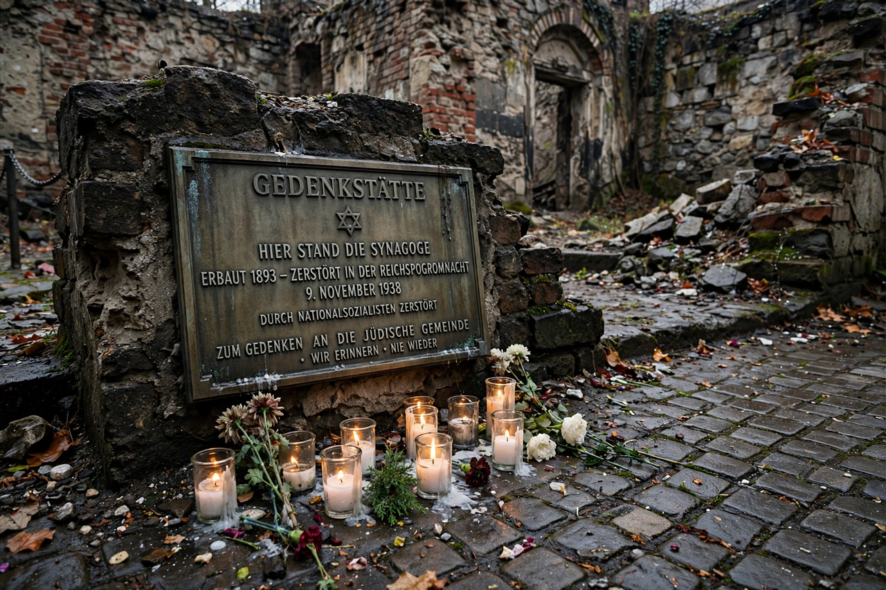

Kristallnacht
| Kristallnacht | |
|---|---|
 | |
| Date | November 9–10, 1938 |
| Location | Nazi Germany (including annexed Austria and Sudetenland) |
| Target | German and Austrian Jews |
| Deaths | At least 91 murdered; further deaths in custody followed |
Kristallnacht (German for "Crystal Night"), also known as the Night of Broken Glass, was a pogrom against Jews carried out by Nazi Party paramilitary forces and civilians throughout Nazi Germany on November 9–10, 1938. Its name refers to the shattered glass that littered the streets after the windows of Jewish-owned shops, buildings, and synagogues were smashed. It is widely regarded as a decisive turning point in Nazi persecution of the Jews, marking the shift from legal and economic discrimination, codified by the Nuremberg Laws, to open mass violence.
Prelude
The immediate pretext was the shooting of German diplomat Ernst vom Rath in Paris by Herschel Grynszpan, a 17-year-old Polish Jew whose family had been among thousands of Polish Jews expelled from Germany. Propaganda Minister Joseph Goebbels used vom Rath's death to incite coordinated attacks, presented by the regime as spontaneous "demonstrations of popular anger" but in fact organized by the SA, SS, and Hitler Youth.
The pogrom
During the night, more than 1,400 synagogues were burned or destroyed, along with prayer rooms, cemeteries, thousands of shops, and many Jewish homes. Firefighters were ordered not to intervene except to protect non-Jewish property. At least 91 Jews were murdered, and some 30,000 Jewish men were arrested and sent to concentration camps such as Dachau, Buchenwald, and Sachsenhausen. The Jewish community was collectively fined one billion Reichsmarks for the damage.
Aftermath
Kristallnacht accelerated Jewish emigration and was followed by the near-total exclusion of Jews from German economic life. International reaction was one of horror, and the United States recalled its ambassador, though few countries loosened immigration restrictions. Historians view the pogrom as a prelude to the mass murder of the Holocaust; it is commemorated annually on November 9, and International Holocaust Remembrance Day events frequently reference it.